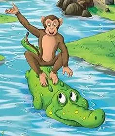

Panchatantra


Brief Overview
✎ The Monkey & the Crocodile
A monkey named Raktamukha lives by a riverbank, sharing sweet jamun fruits with a crocodile named Karalamukha. Their warm bond breaks when the crocodile's wife insists on eating the monkey’s heart. Torn by pressure at home, Karalamukha invites the monkey across the river under the guise of hospitality, only to confess midstream that he plans to take his heart.
Thinking fast on his feet, the monkey stays calm and claims he left his heart safely behind on the tree. The gullible crocodile swims back to retrieve it, allowing Raktamukha to leap to safety and sever their ties forever. This classic fable proves that presence of mind can rescue us from dire peril, while blind trust often costs what we hold dearest.
The Reason
✤ Why It’s My Favorite Masterpiece
The monkey and the crocodile is my favorite literary masterpiece because it gives a great lesson without making me sit through a super long story. I like how it gets right to the point, so whenever I need a quick reminder about being careful with who I trust, I can just think back to this story without reading through pages of text.
It also feels super familiar to me because it reminds me of the Pabula ng Unggoy at Buwaya in the Philippines. It makes me wonder if our local version was derived from this Panchatantra story.
Plus, stories that personify animals are just really fun to read. Giving animals human personalities, talk, and sneaky traits makes the whole thing entertaining, while still keeping the moral simple and relatable for everyday life.
Appreciation & Insight
✤ Why I Appreciate the Story
The themes of betrayal, presence of mind, and misplaced trust are the reasons why I appreciate this story. Karalamukha starting off as a loyal friend but giving in to his wife's demands shows how quickly people can turn on you when external pressure comes in, which is a practical lesson about keeping your guard up. On the other hand, Raktamukha's character shows the power of staying calm under pressure. Instead of panicking when he realizes he's in danger, he uses his quick wits to outsmart the crocodile, proving that clear thinking can save you from tough situations.
✶ Personal Connection and Realization
Reading this story made me reflect on my own relationships and how easy it is to trust people without thinking twice. Being a good friend doesn't mean blindly following someone or letting your guard down completely, proving that these quick life lessons are universal and stick with us no matter where we grow up.